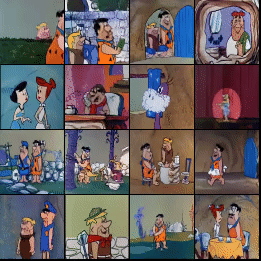
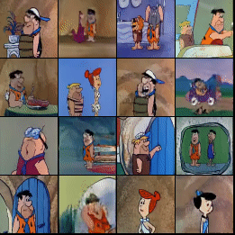
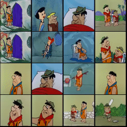
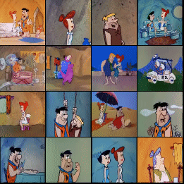

   
All results are generated by a 4x16x16 VQGAN and GPT prior - trained on the Flintstones dataset. One frame is fed as input to the model after which, it generates 4 frames that would (ideally) follow the input